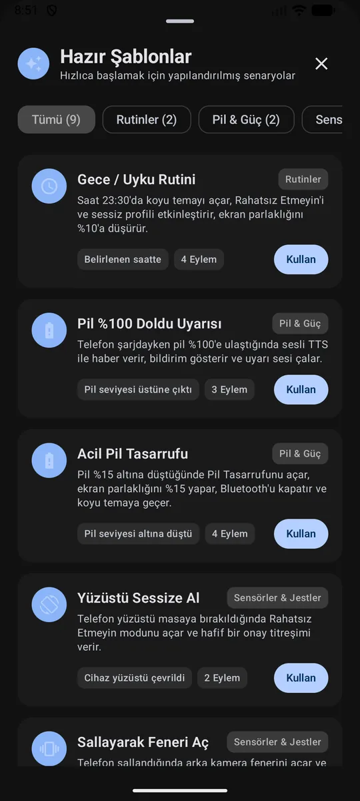
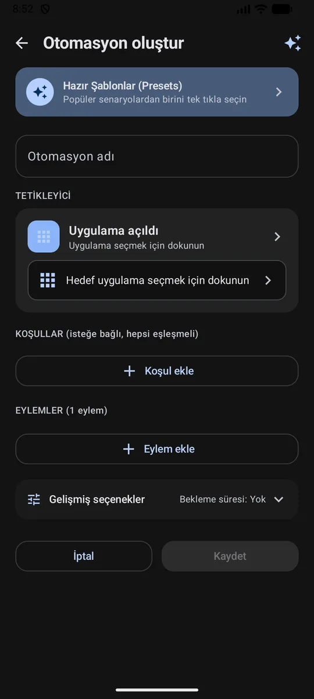
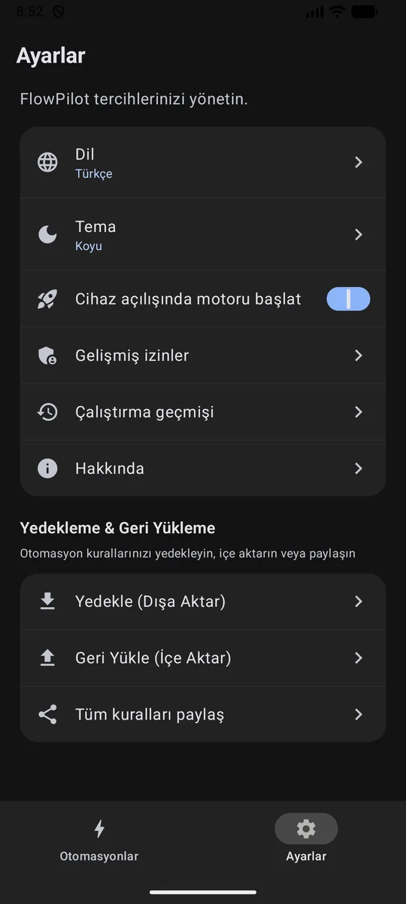
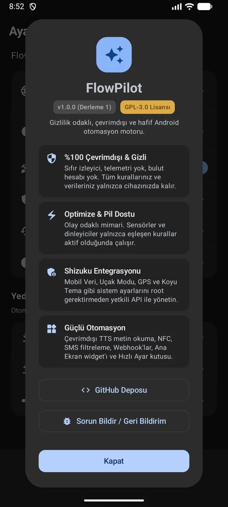

Tetikleyiciler
- Belirli saat / periyot
- Geofence
- Pil seviyesi
- Şarj bağlandı / kesildi
- Wi-Fi bağlandı / kesildi
- SSID eşleşmesi
- Bluetooth cihazı
- NFC etiketi
Açık kaynak · Root gerektirmez · v2.2.1
Olay tabanlı otomasyon motoru: tetikleyici gerçekleştiğinde yalnız gereken dinleyici çalışır, ayrıcalıklı eylem Shizuku IPC ile uygulanır. Sürekli çalışan wake-lock yok.
adb install FlowPilot-v2.2.1.apk
İnteraktif stüdyo
Aşağıdaki üç hazır kural gerçek uygulamadan alınmış ekranlar ve kavramsal kural tanımıyla gösterilir. Tanımlar serileştirilmiş dışa aktarma biçimi değildir.
Saat 23:00'te otomatik parlaklığı kapatır, seviyeyi %10 yapar ve Rahatsız Etmeyin'i açar.
Kabiliyet haritası
Android'in yerel API sınırları içinde çalışır. Mavi işaretli eylemler Shizuku IPC gerektirir; kalanlar standart API'lerle uygulanır.
Shizuku IPC gerektirir
Çalışma modeli
Kural oluşturmak, dinlemek ve uygulamak üç ayrı sorumluluk. Etkin kural yoksa ilgili dinleyici de kapanır.
Tetikleyici, koşul ve sıralı eylemleri görsel oluşturucuda birleştirin; hazır şablonlardan içe aktarın.
Yalnız etkin kuralların ihtiyaç duyduğu alıcı ve dinleyiciler kayıtlı kalır; kural devre dışı kalınca bırakılır.
Değerlendirme yerelde yapılır; ayrıcalıklı eylem allowlist üzerinden Shizuku IPC'ye, diğerleri standart API'ye gider.
Arayüz
Dinamik renk uyumu, yüksek bilgi yoğunluğu ve tek elle erişilebilir kontroller.




Mimari fark
Eski otomasyon araçları karmaşık izinler, sürekli çalışan arka plan döngüleri ve kapalı kaynakla gelir. FlowPilot modern Android pratikleriyle tasarlandı.
| Kriter | Geleneksel araçlar | FlowPilot |
|---|---|---|
| Arka plan tüketimi | Sürekli foreground service ve wake-lock | Olay tabanlı alıcılar, ihtiyaç odaklı dinleyiciler |
| Ayrıcalıklı erişim | Root veya karmaşık ADB betikleri | Standart Shizuku IPC, root gerekmez |
| Uygulama boyutu | Uygulamaya ve yapılandırmaya göre değişir | 2,6 MB release asset |
| Gizlilik | Crashlytics, analitik SDK'ları, hesap zorunluluğu | Sıfır telemetri; iletişim yalnız açıkça kullandığınız özelliklerle |
| Kaynak kodu | Kapalı kaynak / ücretli | GPL-3.0, GitHub'da tam kaynak |
Kurulum
Root gerekmez. Shizuku'yu Android 11+ Kablosuz Hata Ayıklama ile telefonda veya USB üzerinden başlatın.
GitHub Releases'ten FlowPilot-v2.2.1.apk dosyasını indirin ya da ADB ile doğrudan kurun.
Geliştirici Seçenekleri'nden Kablosuz Hata Ayıklama ile eşleyin; ya da cihazı USB ile bağlayıp terminalden başlatın.
Geofence ve pil
Sürekli GPS taraması yerine Google Play Services geofence API'si kullanılır. Arka planda giriş/çıkış algılamak için hassas konum ve arka planda her zaman izin gerekir.
Yedek ve gizlilik
Normal JSON dışa aktarma webhook sırlarını çıkarır ve içe aktarılan kuralları devre dışı bırakır. Şifreli tam yedek tüm kural verisini AES-256-GCM ve parola ile taşır; geri yükleme etkinlik durumunu korur.
HyperOS / MIUI
Ekran kapalıyken dakik çalışması için FlowPilot'a otomatik başlatma iznini verin ve pil tasarrufunu kısıtlama yok yapın.
$ adb devices
List of devices attached
R58M12ABCDE device
$ adb install FlowPilot-v2.2.1.apk
Performing Streamed Install
Success
$ adb shell sh /sdcard/Android/data/moe.shizuku.privileged.api/start.sh
info: start.sh begin
info: shizuku_starter service running
info: shizuku server is ready to accept IPC connections
SSS
Hayır. Ayrıcalıklı eylemler Shizuku IPC üzerinden çalışır; cihazı rootlamanız gerekmez.
Wi-Fi, Bluetooth, mobil veri ve uçak modu gibi sistem anahtarları normal uygulama izinleriyle değiştirilemez. FlowPilot bu eylemleri allowlist üzerinden Shizuku'ya iletir; parlaklık, ses, DND ve bildirim gibi eylemler standart API'lerle çalışır.
Kurallar cihazda saklanır. Telemetri, analitik veya hesap yoktur; dış iletişim yalnızca sizin yapılandırdığınız webhook, SMS ve paylaşım gibi özelliklerle gerçekleşir.
Normal JSON dışa aktarma webhook URL, header ve gövdelerini çıkarır; içe aktarılan kurallar siz etkinleştirene kadar kapalı kalır. Şifreli tam yedek tüm veriyi parola türevli AES-256-GCM ile taşır ve geri yüklemede etkinlik durumunu korur.
Android 8.0 (API 26) ve üzeri. Derleme hedefi Android 16 (API 36). Kablosuz Hata Ayıklama ile Shizuku başlatma Android 11+ gerektirir.
Motor olay tabanlıdır: kalıcı wake-lock veya sürekli CPU döngüsü yoktur. Dinleyiciler yalnız etkin kuralların ihtiyaç duyduğu sürece kayıtlı kalır.
2,6 MB, root yok, telemetri yok. GPL-3.0 lisanslı, tamamen açık kaynak.